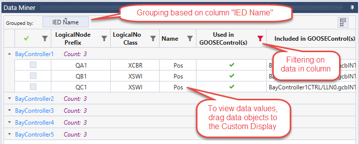
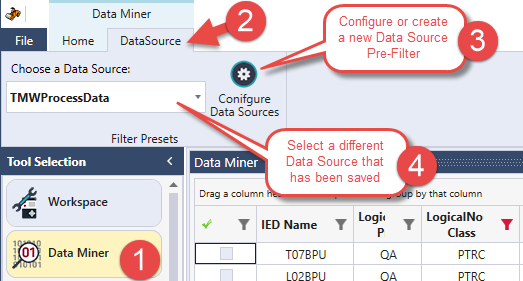
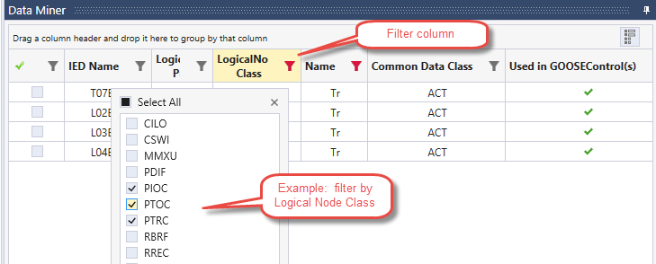
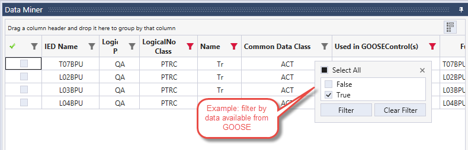
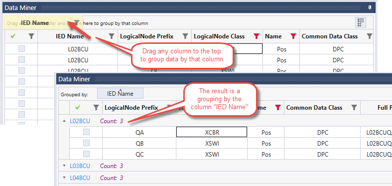
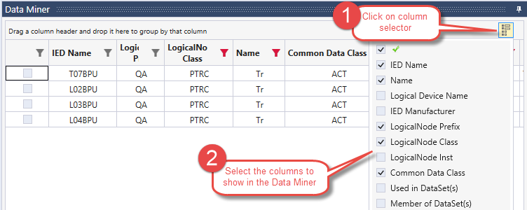

Using the Data Miner
The Data Miner is a powerful tool to find the data you need across multiple IEDs.
- Each row in the Data Miner is a data object in an IED
- Each column can be filtered, grouped, or sorted by value
- Any data objects can be viewed in a Custom Display, in a table view called the

Note: The Data Miner shows data objects across all of the IEDs in the workspace. Data objects are complex objects that contain multiple data attributes. For example, the data object Pos in the example above may contain stVal (status value), q (quality), and t (time). Values for data attributes can be viewed in the Custom Display, Data Monitor, or Advanced Client.
Finding Data ObjectsThree techniques can be used to find data objects in the Data Miner: |
Viewing Data Object ValuesData values can be viewed in three different ways: |
Pre-Filtering with Data Source
The Data Source is a global pre-filter that is applied to the SCL Files when creating a workspace. This pre-filter limits the amount of data to a manageable size. This is necessary because some IEC 61850 SCL Files can contain millions of data attributes, some of which are not necessary for the testing you are doing.
Learn more about pre-filtering here.

Filtering Data by Columns
Any of the columns in the table view in the Data Miner can be filtered or grouped to find IED data objects. Column filters that are active are highlighted in red.
Learn more about column filtering here.
Example 1: Data can be filtered by Logical Node Class (CSWI, PTRC, MMXU, etc.) as seen below.

Example 2: Data can be filtered to only show data contained in GOOSE messages. The same type of filter can be setup to show data available from Reports.

Grouping Data by Columns
Data objects can be grouped by any column. For example, all the data objects can be grouped by IED Name or Logical Node Prefix to group the data according to substation bays.
Learn more about grouping here.
Example: Data can be grouped by IED Name.

Select Which Data Columns to View
Several different columns can be displayed for data objects in the Data Miner:
Column Selection - columns can be added or removed from the table view.

Viewing Data Values
Data values for data attributes can be viewed in the Custom Display or the Data Monitor:
Custom Display - for a graphical view of data, drag data objects to the Custom Display. For many data objects, this will create a graphical view of the data.
Data Monitor - for a table view of data, drag data objects to the Data Monitor. This will create a table view of the data attributes in the data objects.
Advanced Client - for a detailed view of the IED data model, right click on the data object and select "Open in Advanced Client". This opens the data object in the full IED data model. This view is the same as the original Hammer data model view in previous version of the 61850 Test Suite.